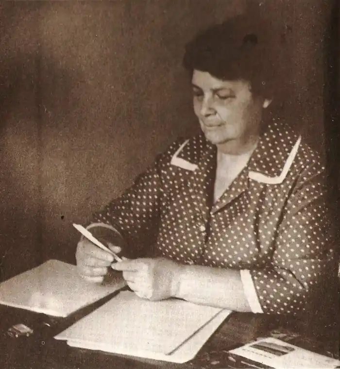
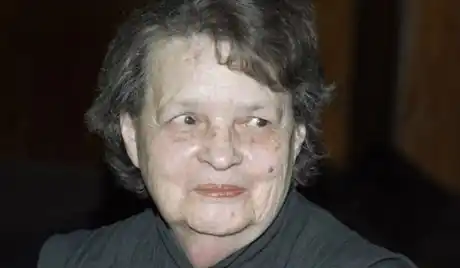

Справжнє ім'я — Вентцель Олена Сергіївна.
8 (21) березня 1907 році, Ревель (нині Таллінн) — 15 квітня 2002, Москва.
Російський прозаїк, вчений-математик. Доктор технічних наук (1954), автор численних наукових праць з проблем прикладної математики, вузівського підручника з теорії ймовірностей, книги з теорії ігор і т.п. Народилася в родині вчителів. У 1929 році закінчила фізико-математичний факультет ЛДУ; з 1935 жила в Москві. Викладала в Військово-повітряної академії імені М.Є. Жуковського (1935-1968) і Московському інституті інженерів транспорту (1968-1986). Як літератор (обрала собі "математичний" псевдонім — від назви висхідній до латині французької букви "ігрек") почала публікуватися в 1957. Увагу читачів і критиків привернули розповіді Грекової За прохідний (1962; на його основі спільно з Олександром Галичем написала комедію Будні та свята, 1967) і Дамський майстер (1963). У цьому напрямі розвивалася і подальше (нерідко викликало бурхливі дискусії і навіть звинувачення в "наклепі") творчість Грекової, присвячене як добре відомої письменниці середовищі науково-технічної, в т.ч. військової інтелігенції (повісті На випробуваннях, 1967, Кафедра, 1978; романи Пороги, 1984, Живі перекази, опубл. в 1995), так і життєвим історіям людей різних професій, своєрідно продовжуючи тему "маленької" людини в російській літературі і в той же час немов підтверджуючи думку М.М. Бахтіна про те, що кожна людина "більше" своєї долі і навіть непомітне, на перший погляд, існування таїть в собі глибини страждань і пристрастей, сум'яття почуттів і творчі злети (повісті Маленький Гарусов, 1970, Господиня готелю, 1976, Вдови пароплав, 1981 , однойменна п'єса в співавторстві з П.С. Лунгіним, 1983, Фазан, 1985, Перелом, 1987; розповіді Господарі життя, 1960, опубліковані в 1988 році, Скрипка Ротшильда, 1981, Без посмішок, 1986). Характерно прагнення письменниці зв'язати навіть камерне розповідь про вигаданих персонажів з важливими, часом трагічними подіями в житті країни (масової висилкою ленінградців з міста після вбивства С.М. Кірова, кампанією боротьби з вченими-кібернетики, справою "лікарів-убивць"), вивести приватні долі на рівень типових ситуацій, безжально витягають хвороби суспільства (бюрократизація, невігластво, нехлюйство, заздрість, душевна черствість, паразитизм) — завжди, проте, залишаючи "світло" сподівань на його зцілення, найчастіше в обр зах незграбних, але чарівних і духовно прекрасних жінок і "некарьерних", але серйозних і розумних чоловіків, підкреслюють розбіжність в лицемірному суспільстві видимості і суті і протистоять навмисної "дегероїзації" конформістської офіціозу. Ірині Грекової належить ряд віршованих та прозових книг для дітей (в т.ч. повість "Аня і Маня", 1979). За літературними творами були поставлені спектаклі і фільми: "Будні і свята" у МХАТі (за п'єсою, написаною у співавторстві з Олександром Галичем) "Вдови пароплав" в театрі Моссовета (в співавторстві з Павлом Лунгіним) Фільм "Кафедра" (у співавторстві з Павлом Лунгіним). Фільм "Благословіть жінку", 2003, режисер Станіслав Говорухін